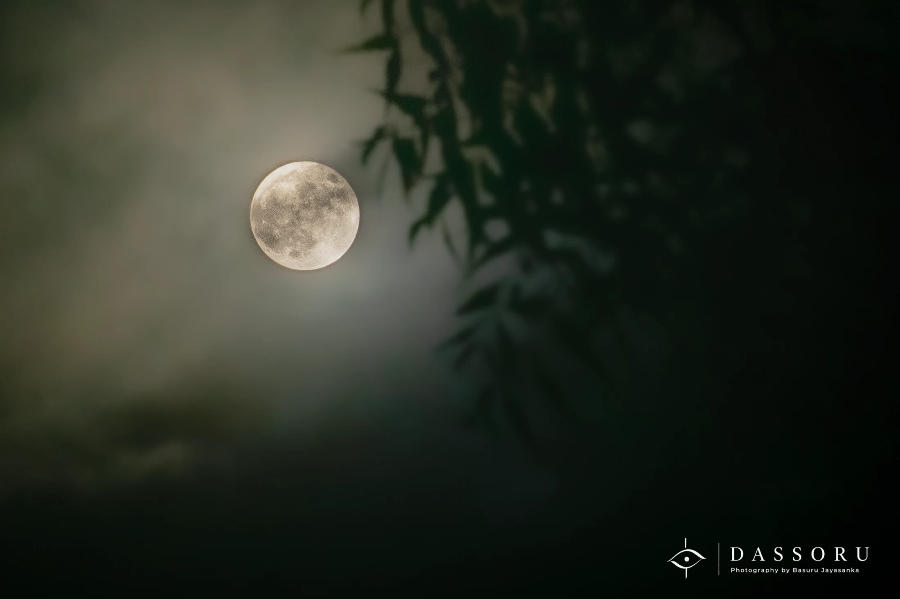

NATURE
Closest One to Us
A quiet moment beneath the Moon.
It was a Full Moon Poya Day night in Jamnagar.
The Moon is the closest heavenly body to us, yet sometimes we forget to simply stop and look at it.
As a Buddhist, the Full Moon Poya Day holds a special meaning for me. That night, I saw the Moon slowly appearing through the clouds.
There was nothing dramatic about the scene. No great landscape. No extraordinary event. Just the Moon, the clouds and a quiet night.
But something about the moment felt calm and sincere.
I stood there watching it emerge, and for a while, everything seemed slower.
I took the photograph not simply because the Moon looked beautiful, but because of how peaceful I felt while looking at it.
Sometimes a photograph does not need to explain everything. Sometimes it only needs to remind us of how we felt.
- Location
- Jamnagar, India
- Date
- February 2023 · Full Moon Poya Day
- Photographer
- Basuru Jayasanka
- Category
- Nature
For commercial use, publication, prints or image licensing, please contact Basuru directly via email or WhatsApp.
READER REFLECTIONS
Thoughts & Feelings
behind this photograph.
Did this photograph or story bring back a memory or feeling for you? Leave your reflection below.